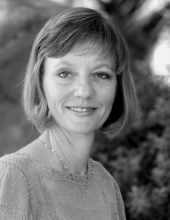

Please note: the AAS Obituaries are temporarily being hosted on this website while their full content is being ingested into the PubPub publishing platform newly adopted by the Bulletin of the American Astronomical Society. When the migration is complete, your existing links will take you to the final, migrated content. Contact peter.williams@aas.org with any questions.
Karen Lorraine Harvey (1942-2002)
Two days after completing her last research paper, Karen Lorraine Harvey died of complications associated with cancer on 30 April 2002. She earned international recognition for her wide-ranging work on solar magnetic fields and solar activity. Her friends knew her as a warm, generous, energetic woman who admirably balanced her scientific achievements with devotion to family, service to the professional community, and fostering the careers of younger colleagues.
Karen was born on 26 December 1942 to Marilyn and Ellwyn Angle in Rapid City, South Dakota. Karen’s mother was a nurse and homemaker. Her father, an engineer and space scientist, sparked her interest in science when he bought her a small telescope that she used as a teenager to study sunspots.
In 1960, Karen made only the eighteenth observation of a white light flare since their discovery 101 years earlier, resulting in the first of her more than 120 published research papers. Karen’s future husband, Jack Harvey, happened to observe the same flare in Hα at Lockheed Solar Observatory, where he was working part-time while studying astronomy at the University of California at Los Angeles. Shortly after this, Karen also entered UCLA, but Karen and Jack did not meet frequently until the next summer when they both worked part-time at Lockheed.
The UCLA astronomy department was not supportive of either solar physics or women in astronomy, but Karen, with perseverance instilled by her mother, earned a BA degree in 1964. She continued working at Lockheed as an independent contractor supported by grants, often obtained by her career-long friend and collaborator, Sara Martin.
During the summers of 1965 and 1966, Karen worked for Bill Livingston in the Solar Division of Kitt Peak National Observatory (KPNO) as a summer student. In addition to establishing enduring professional associations and friendships in the hospitable environment at KPNO, Karen renewed a deepening friendship with Jack, who was collecting data on Kitt Peak for his PhD dissertation; they were married in 1968. In 1969, after completing an MS degree in the woman-friendly UCLA Meteorology Department with a thesis on ionospheric effects of solar flares, Karen became a long-term, unpaid visitor at KPNO, where Jack had taken a staff position. A few small grants and contracts provided Karen with some funding.
Karen continued to study flares using both magnetic and velocity field data in the early 1970s, often in collaboration with Sara Martin. Nurtured by hours of flare patrol observing, Karen had an exceptional ability to forecast flares. She usually succeeded in getting valuable flare observations, even with the small fields of view afforded by the instrumentation of the time, because she accurately scheduled KPNO observing time months ahead by using active longitude clues. Karen also studied the individual and statistical properties of small-scale active regions (named ephemeral active regions by Helen Dodson-Prince of McMath-Hulbert Solar Observatory), including their association with the newly-discovered X-ray bright points and HeI 1083 nm dark points. After many follow-up studies, Karen became arguably the world’s leading authority on ephemeral regions and their role in the solar activity cycle.
Karen and Jack’s son, David, was born in 1974, and for several years thereafter Karen devoted most of her prodigious energy to motherhood. To nourish her continuing strong interest in solar physics, Karen volunteered to produce an index for Solar Physics. Using subject headings provided by the journal’s editorial board, she produced three short indices for the first 40 volumes and then published a full index for volumes 1–55 with refined subject headings. Characteristically, Karen continued to compile indices for more than twenty years (through volume 197), long after her successful research career would have justified passing that responsibility to others. She may be the only person to have read every one of the thousands of papers in Solar Physics.
Karen incorporated as Solar Physics Research Corporation in 1978 because NASA required a corporate entity to receive funding for one of her research proposals. Her one-woman business continued quietly until 1992 when, as a favor to the National Solar Observatory (NSO), she started adding other scientists, including D. Braun, Y. Gu, H. Hudson, J. Jefferies, C. Lindsey, S. Martin, A. Takeda, K. Topka, O. R. White, and others looking for a temporary scientific home. Although Karen might not have thought of herself this way, she was an entrepreneur in the best sense of the word: someone who pioneered, persevered, and succeeded in the harsh arena of independent science while furthering the careers of others.
Despite her increasing reputation in the field of solar physics, Karen felt the lack of the conventional formal credential, a doctoral degree. In 1984, she began a massive study of the magnetic properties of active regions and ephemeral regions under the guidance of Kees Zwaan of Utrecht University. It took nearly nine years to complete what turned out to be a substantial series of papers that addressed many fundamental properties of active and ephemeral active regions through the solar cycle, including their size-distribution, total and net magnetic flux, and north-south asymmetry. Her friends and colleagues understood—better than Karen herself—the courage and determination it required to seek a PhD in mid-life and mid-career; earning it was a highlight of her professional life.
While conducting her dissertation research, Karen chaired one of several working groups formed to conduct a series of workshops on the solar cycle. In 1991, the fourth of these workshops, which she organized and conducted at NSO/Sacramento Peak, attracted more than 70 scientists from all over the world. Karen edited the resulting conference publication, which contains an unusual number of significant contributions.
Karen was a co-investigator on the US team that participated in the development and operation of the SXT instrument on the Yohkoh satellite. This role resulted in several happy and productive trips to Japan and numerous papers with Japanese and US scientists on various types of X-ray events and their associated magnetic fields. Many other collaborations, most recently with a group interested in filaments and their connection with the solar cycle, attracted Karen’s participation. Because of her natural inclination to help and work with others, she numbered more than 150 scientists among her co-authors of published papers.
During the course of her three-year struggle with ovarian cancer, Harvey worked mainly on two projects: trying to understand how various magnetic structures affect the Sun’s total and spectral irradiance, and a thorough compilation of coronal hole properties and associations over a solar cycle. Characteristically, she provided other workers with the coronal hole data before she published her own analysis. The entire database will soon be publicly available according to her wishes.
Karen served the professional solar physics community throughout her career. She was elected treasurer of the Solar Physics Division (SPD) of the American Astronomical Society for six consecutive terms before retiring in 1995 after 18 years in this role. She also served on the SPD nominating and executive committees and was active in the SPD women's group. She enjoyed educational activities, appearing in an educational television program about the Sun and, shortly before her death, answering questions from students participating in the Internet Solar Week 2002 for young women. She contributed to a US National Research Council study of the field of solar physics and carried out an exhaustive study of demographics and funding. In January 2002, the International Astronomical Union honored Karen by naming asteroid 23884 after her. In May 2002, the SPD voted to establish the Karen Harvey Prize “to recognize and encourage new talent in solar physics, and to recognize the contributions of Karen Harvey to the study of the Sun.”
Karen Harvey leaves a legacy of fundamental research shaped by her insight into solar magnetic fields, a natural gift strengthened by years of patient observation and analysis. She knew what was important and brought out the best in her collaborators. She overcame many obstacles in becoming a successful woman in solar physics, to the lasting benefit of the field. Above all, she relished life and lived it with zest, grace, determination, humor, and humility.
Obituary written by: John W. Harvey (National Solar Observatory), Sara F. Martin (Helio Research ), Douglas M. Rabin (NASA Goddard Space Flight Center), Oran R. White (Mancos, Colorado)
BAAS Citation: BAAS, 2002, 34, 1363
SAO/NASA ADS Bibcode: 2002BAAS...34.1363H